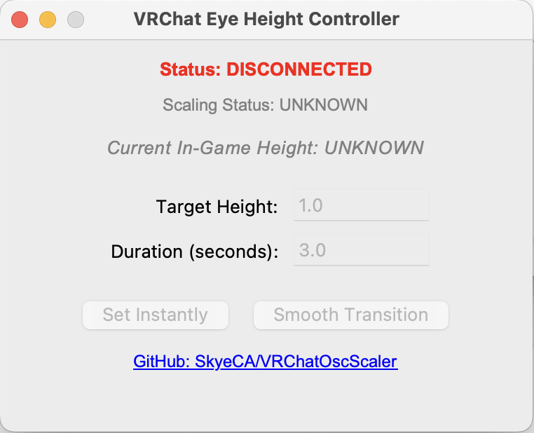

Smooth & Instant Scaling
VRChatOscScaler is a lightweight desktop utility that communicates directly with VRChat via OSC. Easily adjust your avatar height without modifying your existing avatars.
- Set Instantly: Snap to an exact height with a single click.
- Smooth Transitions: Gracefully transition to your target height over a custom duration for a better in-game aesthetic.
- Live Feedback: Automatically reads and displays your current in-game height and avatar scaling permissions.
- Free: I'm not asking for money.
